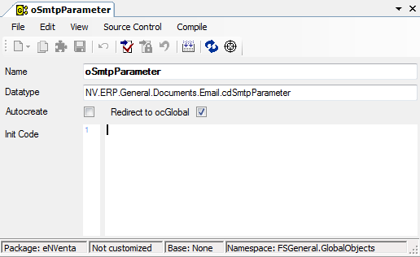

Global Objects
In Framework Studio – bzw. in der Anwendung – gibt es ein globales Objekt, welches überall verfügbar ist. Es kann jederzeit mit this.Global angesprochen werden.
Damit das Global Object überall zur Verfügung steht, muss es beim Erzeugen eines neuen Framework-Studio Objektes mit dem Constructor übergeben werden.
Variante mit dem new-Operator
cdComponent oObject = new cdComponent( this.Global);
Nutzen der Interfaces und Factory-Klassen
IcdComponent oObject2 = cdComponentFactory.Create( this.Global );
Im automatisch generierten Code werden alle Objekte (Components, Forms, Workflows) in gleicher Weise erstellt. Somit ist dieses Global jederzeit und überall verfügbar.
Das Global Object eignet sich hervorragend, um z.B. System- oder Benutzerdaten in der gesamten Anwendung zur Verfügung zu stellen.
Welche Daten/Variablen dieses Objekt anbietet, wird im Namespace FSGeneral.GlobalObjects. definiert.
Alle Elemente dort werden beim Start der Applikation instanziiert.
Global Object Designer:

Button New
Es wird eine neue Variable angelegt. Sie können gleich den Namen der Variablen eingeben.
Button Delete

Löscht die markierte Variable.
Name
Name der Variablen bzw. des Objekts.
Datatype
Gibt den Datentyp der Variablen an. Über die Combobox kann der Datentyp geändert werden. Es öffnet sich der Namespace-Baum, über den das gewünschte Struct, Metadatatype oder Component ausgewählt werden kann.
Autocreate
Ist diese Checkbox aktiviert, wird die Variable automatisch beim Start der Anwendung initialisiert. Wenn nicht, wird die Variable einfach nur angelegt, ohne ihr einen Wert zuzuweisen. Dies können Sie dann im Code-Fenster festlegen.
Redirect to ocGlobal
Wenn diese Checkbox aktiviert ist, dann werden alle Zugriffe auf dieses GlobalObject in das gleichnamige Property in der Component FSGeneral.cGlobal umgeleitet. Dies betrifft Lese- und ggf. auch Schreibvorgänge. Wenn es sich bei dem cGlobal-Property um ein Readonly Property handelt, dann erkennt dies Framework Studio und wird das GlobalObject selber auch entsprechend readonly erzeugen.
Das cGlobal-Property kann wie gewohnt als Individual Property mit Membervariable gestaltet werden, welches die Daten erst beim ersten Zugriff aufbereitet. So ist es möglich, ein GlobalObject erst beim ersten Zugriff zu initialisieren und so den Start der Anwendung zu beschleunigen.
Init Code
Im Code-Fenster können Sie angeben, was mit der Variable beim Start der Anwendung geschehen soll. Sie können den Variablen beispielsweise Werte zuweisen oder wenn Sie eine Component mit einer Query eingebunden haben, an dieser einen Load ausführen, damit die entsprechenden Daten aus der Datenbank gelesen werden.
Methoden am GlobalObject
Das Globale Objekt stellt neben den selbst definierten Properties auch System-seitig Methoden und Properties bereit.
Siehe Methoden am GlobalObject
Properties am GlobalObject
Siehe Methoden am GlobalObject
ocGlobal
public IcGlobal ocGlobal
Gibt ein Objekt vom Typ IcGlobal zurück. Dieses Objekt ist eine Instanz der Component cGlobal, die im Namespace FSGeneral im SystemPackage definiert ist.
Für weitere Informationen siehe cGlobal.
SafeInitializing
Siehe SafeInitializing